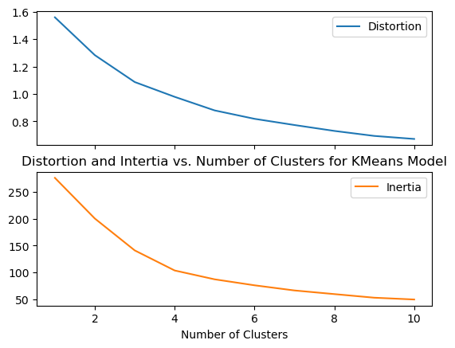
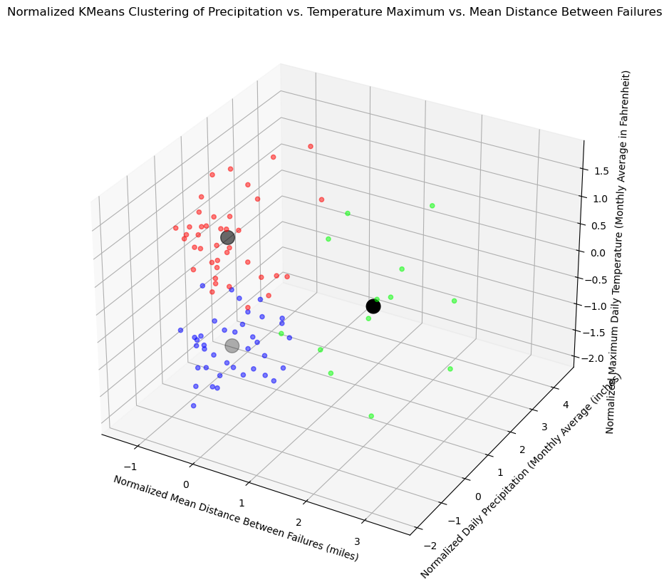
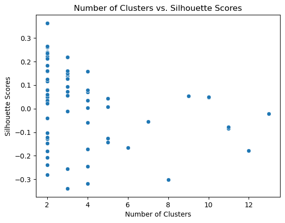
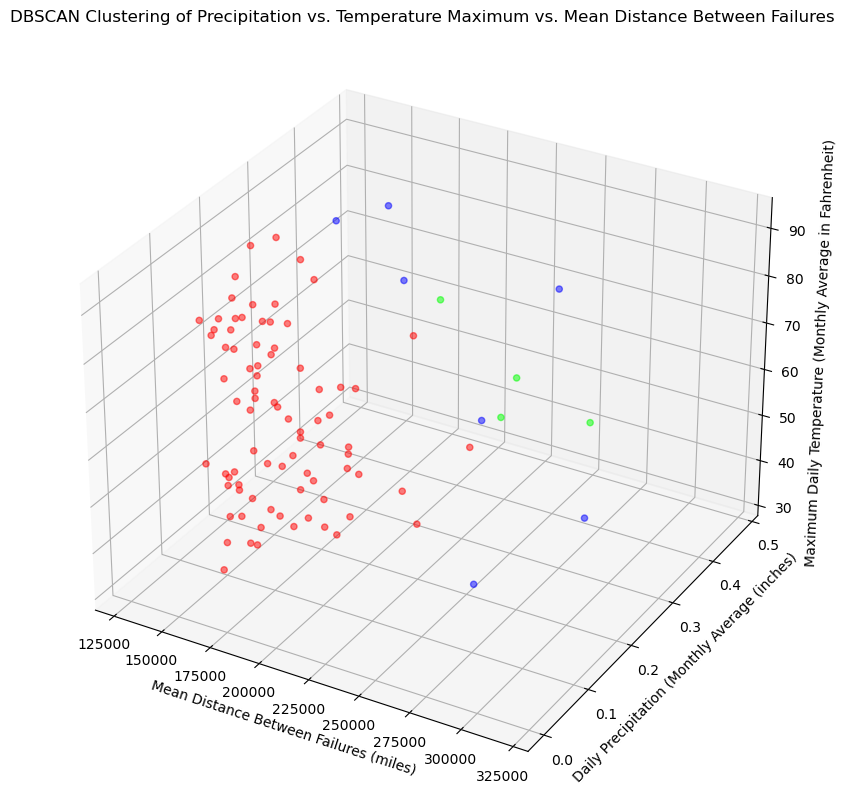
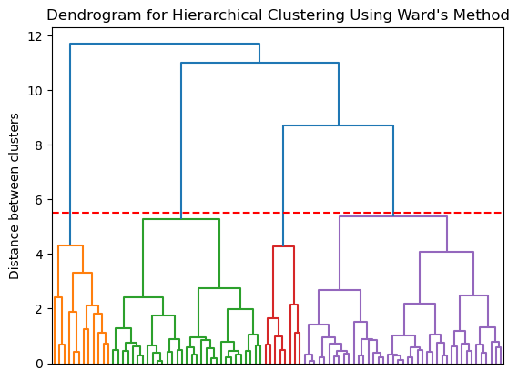
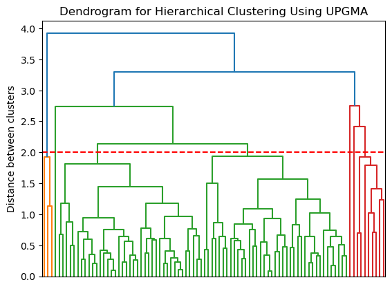
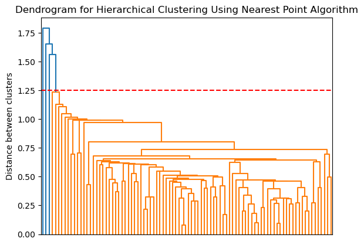
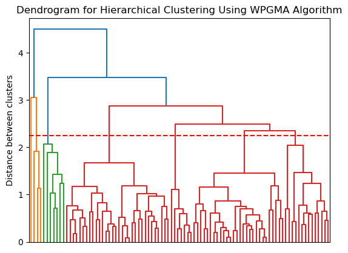
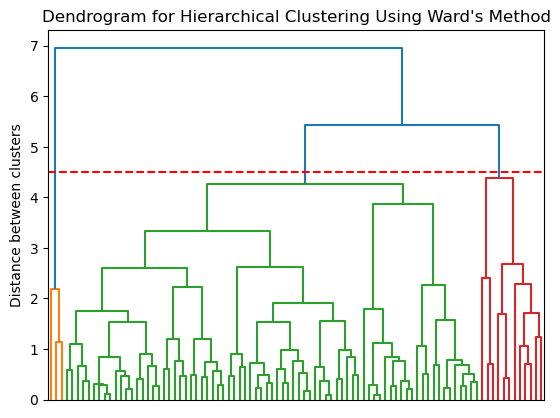

HEADER BAR DOES NOT WORK WITH QUARTO, ACCESS OTHER TABS BY CLOSING THIS ONE
Introduction
Intro here blah blah blah
What is Clustering and How Does It Work?
Summary info blah blah blah
Methods
Data Selection
Explain data sets
Code
# Necessary packagesimport pandas as pdimport numpy as npimport matplotlib.pyplot as pltimport seaborn as snsimport scipy.cluster.hierarchy as schimport sklearn.cluster as clusterfrom sklearn.model_selection import train_test_splitfrom sklearn.preprocessing import StandardScalerfrom sklearn.cluster import MeanShiftfrom sklearn.cluster import Birchfrom scipy.cluster.hierarchy import dendrogram, linkagefrom sklearn.cluster import AgglomerativeClusteringfrom sklearn.cluster import DBSCANfrom sklearn.cluster import KMeansfrom scipy.spatial.distance import cdistfrom sklearn.metrics import silhouette_samples, silhouette_scorefrom sklearn.preprocessing import MinMaxScaler'''# Read in data frameslookup = pd.read_csv("../../data/01-modified-data/Remote-Station-Lookup-Cleaned.csv")fares = pd.read_csv("../../data/01-modified-data/MTA-Fare-Card-Cleaned-Gathered.csv",index_col=0)weather = pd.read_csv("../../data/01-modified-data/NYC-Weather-Data-Cleaned.csv")# Join data frames by remote station iddf = fares.merge(lookup,on="remote_station_id")# Join weather data frame to overall dfdf['to_date'] = pd.to_datetime(df['to_date'])weather = weather.rename(columns={'DATE':'to_date'})weather['to_date'] = pd.to_datetime(weather['to_date'])df = df.merge(weather,on="to_date")'''
'\n# Read in data frames\nlookup = pd.read_csv("../../data/01-modified-data/Remote-Station-Lookup-Cleaned.csv")\nfares = pd.read_csv("../../data/01-modified-data/MTA-Fare-Card-Cleaned-Gathered.csv",index_col=0)\nweather = pd.read_csv("../../data/01-modified-data/NYC-Weather-Data-Cleaned.csv")\n# Join data frames by remote station id\ndf = fares.merge(lookup,on="remote_station_id")\n\n# Join weather data frame to overall df\ndf[\'to_date\'] = pd.to_datetime(df[\'to_date\'])\nweather = weather.rename(columns={\'DATE\':\'to_date\'})\nweather[\'to_date\'] = pd.to_datetime(weather[\'to_date\'])\ndf = df.merge(weather,on="to_date")\n'
Explain variable selection and divide into test and training
KMeans Clustering
Hyperparameter Tuning
Elbow Method
Explain how it works here
Code
# Test multiple k values using ELBOW method# Code adapted from ANLY501 lab-5.2 authored by Alex Pattarinidists = []inertias = []k =11for k inrange(1,k): model = KMeans(n_clusters=k,init='k-means++',random_state=0) model.fit(X) dists.append(sum(np.min(cdist(X,model.cluster_centers_,'euclidean'),axis=1))/X.shape[0]) inertias.append(model.inertia_) df = pd.DataFrame({'Cluster Num':np.arange(1,k+1), 'Distortion':dists, 'Inertia':inertias})df.plot.line(x='Cluster Num',subplots=True)plt.title("Distortion and Intertia vs. Number of Clusters for KMeans Model")plt.xlabel("Number of Clusters")plt.show()

Silhouette Scores
Explain how this works here
Code
# Code partially adapted from Professor James Hickman's 3D-SKLEARN-CLUSTERING-EXAMPLE.pysilhouette_scores = []n_clusters = []for n_cluster inrange(2,11): model = KMeans(n_clusters=n_cluster,init='k-means++',random_state=0) model_labels = model.fit_predict(X) sil_score = silhouette_score(X, model_labels) silhouette_scores.append(sil_score) n_clusters.append(n_cluster)n_clusters=np.array(n_clusters)silhouette_scores=np.array(silhouette_scores)plt.plot(n_clusters,silhouette_scores/np.max(silhouette_scores), '-d')plt.xlabel("Number of Clusters")plt.ylabel("Silhouette Score")plt.title("Silhouette Score by Number of Clusters for KMeans Model")plt.show()
Conclusion of num clusters chosen (3)
Results of KMeans Clustering
Code
# Final modelmodel = KMeans(n_clusters=3,init='k-means++',random_state=0).fit(X)y_kmeans = model.predict(X)centroids = model.cluster_centers_# Plot clusters/centroidsfig = plt.figure(figsize=(20,10))ax = fig.add_subplot(111, projection='3d')ax.scatter(X[:,0], X[:,1], X[:,2],c=y_kmeans, cmap='brg',alpha=0.5)ax.scatter(model.cluster_centers_[:, 0], model.cluster_centers_[:, 1],model.cluster_centers_[:,2], s=200, c='black')ax.set_title("Normalized KMeans Clustering of Precipitation vs. Temperature Maximum vs. Mean Distance Between Failures")ax.set_xlabel("Normalized Mean Distance Between Failures (miles)")ax.set_zlabel("Normalized Maximum Daily Temperature (Monthly Average in Fahrenheit)")ax.set_ylabel("Normalized Daily Precipitation (Monthly Average (inches)")plt.show()

DBScan Clustering
Hyperparameter Tuning
Code
# Code adapted from ANLY501 lab-5.2 authored by Alex Pattarinitest_eps = np.linspace(0.1,6,120)test_min_samples = np.linspace(2,21,20)sil_scores = []clusters_nums = []best_sil_score =-1for ep in test_eps:for min_sample in test_min_samples:try: model = DBSCAN(eps=ep,min_samples=int(min_sample)).fit(X) labels = model.labels_#print(labels)# Silhouette score sil_score = silhouette_score(X,labels) n_clusters =len(set(labels)) - (1if-1in labels else0) # Adapted from https://scikit-learn.org/stable/auto_examples/cluster/plot_dbscan.html n_noise =list(labels).count(-1)# 1 cluster is a trivial solution, so any models that result in a 1 cluster solution are disregardedif n_clusters !=1: sil_scores.append(sil_score) clusters_nums.append(n_clusters)# If this sil score is better than prior scores, save info of best eps and min sampleif sil_score > best_sil_score: best_sil_score = sil_score best_eps = ep best_min_samples = min_sample best_n_clusters = n_clusters#print(n_clusters)#print("SUCCESS")except:# Parameter test is invalid/produces unusable output (either too many or too few clusters) a=1# Plot of silhouette score vs num clusters#clusters_nums=np.array(clusters_nums)#sil_scores=np.array(sil_scores)# Plot of silhouette score vs num clustersprint("BASED ON SILHOUETTE SCORES CALCULATED ABOVE:")print("The best number of clusters is: "+str(best_n_clusters))print("The best eps value is: "+str(best_eps))print("The best min_samples value is: "+str(best_min_samples))print("With a silhouette score of: "+str(best_sil_score))df = pd.DataFrame()df['Silhouette_Scores'] = sil_scoresdf['Number_of_Clusters'] = clusters_nums# print(df)fig = plt.subplot()sns.scatterplot(x='Number_of_Clusters',y='Silhouette_Scores',data=df)plt.title("Number of Clusters vs. Silhouette Scores")plt.ylabel("Silhouette Scores")plt.xlabel("Number of Clusters")plt.show()
BASED ON SILHOUETTE SCORES CALCULATED ABOVE:
The best number of clusters is: 2
The best eps value is: 1.289915966386555
The best min_samples value is: 6.0
With a silhouette score of: 0.3625135635952267

The optimal number of clusters is 2.
Results of DBSCAN Clustering
Code
# Final DBSCAN model with parameters abovemodel = DBSCAN(eps=best_eps,min_samples=int(best_min_samples))y_dbscan = model.fit_predict(X)labels = model.labels_u_X = scaler.inverse_transform(X)# Plot clustersfig = plt.figure(figsize=(20,10))ax = fig.add_subplot(111, projection='3d')ax.scatter(u_X[:,0], u_X[:,1],u_X[:,2], c=y_dbscan, cmap="brg",alpha=0.5)ax.set_title("DBSCAN Clustering of Precipitation vs. Temperature Maximum vs. Mean Distance Between Failures")ax.set_xlabel("Mean Distance Between Failures (miles)")ax.set_zlabel("Maximum Daily Temperature (Monthly Average in Fahrenheit)")ax.set_ylabel("Daily Precipitation (Monthly Average (inches)")plt.show()

The above plot shows the resulting clusters after constructing and applying a DBSCAN model with the best epsilon and minimum sample hyperparameters found via hyperparameter tuning earlier in this document. Please note that the blue points are noise points, or “outliers” of sorts that are not associated with any cluster. This means that these points are not within the epsilon value (in terms of distance) from the clusters pictured in red and green.
Hierarchical Clustering
Hyperparameter Tuning
Code
# Plot Ward's Method Dendrogramfig,ax = plt.subplots()Z = linkage(X, method='ward') dendro = dendrogram(Z)plt.axhline(y=5.5, color='r', linestyle='--', label='5.5')ax.set_title("Dendrogram for Hierarchical Clustering Using Ward's Method")ax.set_xticklabels([])ax.set_ylabel("Distance between clusters")plt.show()print("The optimal number of clusters based on the Ward's method dendrogram is 4")# Plot average method dendrogramfig,ax = plt.subplots()Z = linkage(X, method='average') dendro = dendrogram(Z)plt.axhline(y=2, color='r', linestyle='--', label='2')ax.set_title("Dendrogram for Hierarchical Clustering Using UPGMA")ax.set_xticklabels([])ax.set_ylabel("Distance between clusters")plt.show()print("The optimal number of clusters based on the UPGMA dendrogram is 3")# Plot single method dendrogramfig,ax = plt.subplots()Z = linkage(X, method='single') dendro = dendrogram(Z)plt.axhline(y=1.25, color='r', linestyle='--', label='1.25')ax.set_title("Dendrogram for Hierarchical Clustering Using Nearest Point Algorithm")ax.set_xticklabels([])ax.set_ylabel("Distance between clusters")plt.show()print("The optimal number of clusters based on the Nearest Point dendrogram is 2")# Plot weighted method dendrogramfig,ax = plt.subplots()Z = linkage(X, method='weighted') dendro = dendrogram(Z)plt.axhline(y=2.25, color='r', linestyle='--', label='2.25')ax.set_title("Dendrogram for Hierarchical Clustering Using WPGMA Algorithm")ax.set_xticklabels([])ax.set_ylabel("Distance between clusters")plt.show()print("The optimal number of clusters based on the WPGMA dendrogram is 3")# Plot Complete Method Dendrogramfig,ax = plt.subplots()Z = linkage(X, method='complete') dendro = dendrogram(Z)plt.axhline(y=4.5, color='r', linestyle='--', label='4.5')ax.set_title("Dendrogram for Hierarchical Clustering Using Ward's Method")ax.set_xticklabels([])ax.set_ylabel("Distance between clusters")plt.show()print("The optimal number of clusters based on the complete method dendrogram is 3")

The optimal number of clusters based on the Ward's method dendrogram is 4

The optimal number of clusters based on the UPGMA dendrogram is 3

The optimal number of clusters based on the Nearest Point dendrogram is 2

The optimal number of clusters based on the WPGMA dendrogram is 3

The optimal number of clusters based on the complete method dendrogram is 3
Talk about each dendrogram (maximizing distance between clusters is good, so Ward is best, thus 4 clusters)
Result of Hierarchical Clustering
Code
model = AgglomerativeClustering(n_clusters=4).fit(X)labels = model.labels_y_hac = model.fit_predict(X)u_X = scaler.inverse_transform(X)# Plot clustersfig = plt.figure(figsize=(20,10))ax = fig.add_subplot(111, projection='3d')ax.scatter(u_X[:,0], u_X[:,1],u_X[:,2], c=y_hac, cmap="brg",alpha=0.5)ax.set_title("Hierarchical Clustering of Precipitation vs. Temperature Maximum vs. Mean Distance Between Failures")ax.set_xlabel("Mean Distance Between Failures (miles)")ax.set_zlabel("Maximum Daily Temperature (Monthly Average in Fahrenheit)")ax.set_ylabel("Daily Precipitation (Monthly Average (inches)")plt.show()